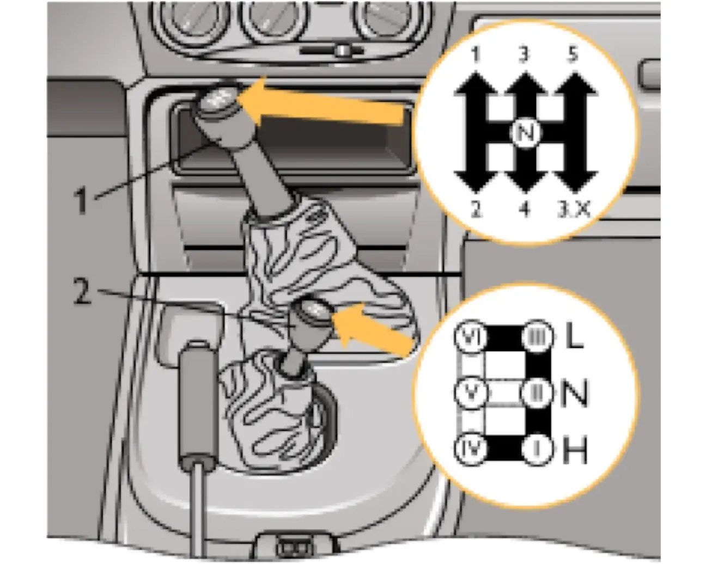

ОПИСАНИЕ АВТОМОБИЛЯ — II. Органы управления и приборы
Рычаги управления трансмиссией
коробка передачраздаткаблокировкадифференциалпониженная
На автомобиле установлена пятиступенчатая коробка передач, а также раздаточная коробка с высшей и низшей передачами и блокируемым межосевым дифференциалом. На рисунке 23 приведены схемы переключения передач и положения рычага раздаточной коробки.

При выборе положений рычага раздаточной коробки учитываются условия эксплуатации автомобиля. Рычаг может занимать следующие положения:
| Положение рычага | Состояние |
|---|---|
| I (В) | Включена высшая передача, дифференциал разблокирован. |
| II (Н) | Нейтральное положение. |
| III (Н) | Включена низшая передача, дифференциал разблокирован. |
| IV (В) | Включена высшая передача, дифференциал заблокирован. |
| V (Н) | Нейтральное положение. |
| VI (Н) | Включена низшая передача, дифференциал заблокирован. |
Переключение передач в раздаточной коробке с низшего ряда на высший можно проводить в движении. При этом для переключения передач следует использовать двойной выжим педали сцепления.
Блокирование и разблокирование межосевого дифференциала в раздаточной коробке проводить переключением рычага в соответствующее положение.
Предупреждение / внимание:
Низшую передачу в раздаточной коробке включайте только после полной остановки автомобиля или на небольшой скорости — до 5 км/ч.
Низшую передачу в раздаточной коробке включайте только после полной остановки автомобиля или на небольшой скорости — до 5 км/ч.